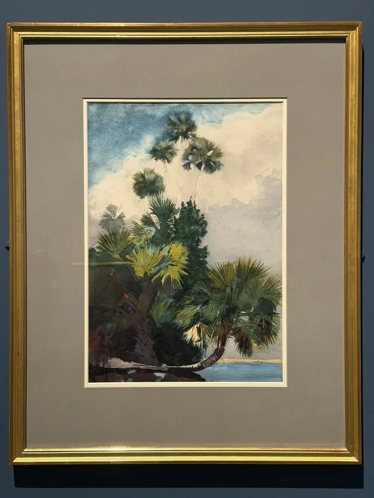

WINSLOW HOMER / LOOK CLOSER
佛罗里达的棕榈树
Palm Trees, Florida

- 作者／制作者
- 温斯洛·霍默（Winslow Homer）
- 年代
- 1904
- 媒介
- 石墨底稿上施水彩
- 展签原文
- Watercolor over graphite
- 收藏
- 波士顿美术馆
- 编号
- 48.731
- 观看地点
- 休斯顿美术馆 · Of Light and Air
- 入藏来源
- John T. Spaulding遗赠，1948
在画前
竖幅里，棕榈的树干一层高过一层，叶片从深色根部向天空散开。低处的植被画得厚密，上方却有大片浅色；视线可以沿树干向上，也可以停在叶丛的绿、黄与蓝灰之间。树不是均匀排开的轮廓，而有各自生长的方向。
与北方森林相比，这里的光从叶片缝隙里穿出来，植物的边缘更锐利。作品作于1904年，展签只将地点标为佛罗里达。画面并未提供一处可以准确指认的地址，倒是让人靠近了某种具体的生长环境：潮湿、明亮，叶子与阴影彼此拥挤。
作品信息与文中展签说明据现场展签 ↗。